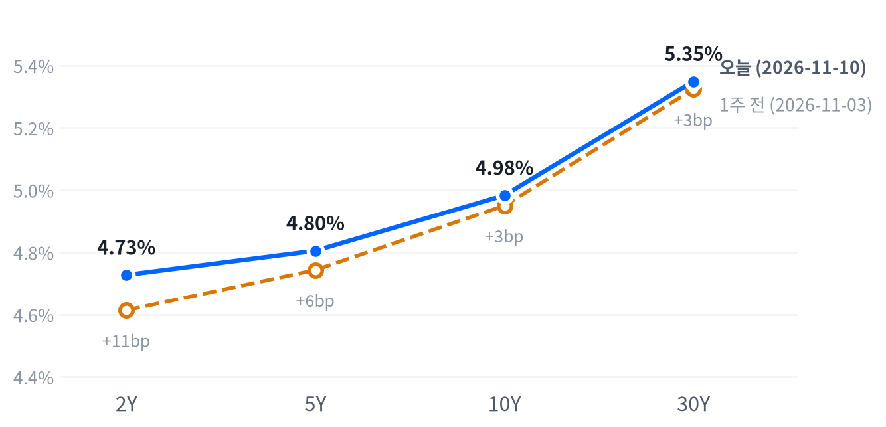

10월 소비자물가가 헤드라인 0.4%, 근원 0.3%로 예상을 웃돌자 2년물 금리가 4.727%로 뛰었고, 달러는 오르고 금은 2.70% 내렸다. 주식은 S&P가 0.38% 내리는 데 그쳤고, 하락은 엔비디아와 전력설비주에 몰렸다.
12월 인상은 사실상 다 가격에 반영됐고, 장기물 입찰이 부진했는데도 커브가 평탄해져 정책금리 경로가 금리를 움직였다는 판단을 뒷받침한다. 소프트뱅크의 발전설비 선급금 손상은 전력망 투자 테마에 고객 조달 위험이라는 새 쟁점을 더했다.
10월 소비자물가가 헤드라인·근원 모두 예상을 웃돌고 연준 인사들 사이에서 12월 50bp 인상까지 거론되자 2년물 금리가 18bp 뛰었다. 2025년 4월 이후 가장 큰 하루 상승이라는 보도가 나왔다. 주식은 거의 흔들리지 않았고, 하락은 2거래일째 급락한 엔비디아와, 소프트뱅크가 미국 데이터센터용 발전설비 선급금을 상각한 뒤 밀린 전력설비주에 몰렸다.
금리 쪽에서는 정책금리 경로를 다시 가격에 넣었다는 해석이 관측과 맞는다. 근원 물가가 3개월 연속 전월비 0.3% 오르고 상승이 식품과 서비스로 넓어져, 에너지 충격이 걷히면 물가가 식는다는 기대가 약해졌다. 시장은 이미 12월 인상을 상당 부분 반영하고 있었고(11월 9일 보도치 84%), 발표 뒤에는 25bp 인상이 사실상 다 반영되고 50bp 가능성이 새로 생겼다는 보도가 나왔다. 10년물 입찰에서 딜러가 평소보다 많이 떠안았는데도 커브가 평탄해진 점은 장기물 공급보다 정책금리 경로가 금리를 움직였다는 판단을 뒷받침한다. 가장 강한 반론은 고용과 물가가 잇달아 예상을 넘은 뒤 단기물 포지션 정리가 하루 반응을 키웠다는 설명이다. 전력설비는 별개의 쟁점이다. 소프트뱅크가 환불되지 않는 선급금을 상각하고 계약을 고친 것은 공급사 수주 잔고의 질을 의심하게 만드는 첫 공개 사례로 본다. 소프트뱅크 CFO는 오하이오 계획을 줄이지 않는다고 했고, 장 마감 뒤 코어위브가 연간 매출 전망을 올린 것은 AI 수요 쪽 반대 근거다. 연합인포맥스를 인용해, JP모건은 오하이오 데이터센터의 가스터빈 발전 수요가 영향을 받을 수 있다고 보면서도 소프트뱅크의 발표가 GE 버노바의 주문 수정을 뜻하는지는 아직 불분명하다고 봤다는 시각도 나왔다. 금리가 크게 뛴 날이라 고배수 성장주 매도와 섞였을 가능성도 남아 있다.
반도체·AI 하드웨어 테마는 이날 종목 사이 차이가 커졌다. 엔비디아가 내린 날 브로드컴은 올라, 엔비디아 한 종목의 지배구조 위험을 업종 전체의 흐름과 따로 봐야 한다는 판단을 이어 간다. 전력망 투자 테마는 고객의 조달 재검토라는 새 쟁점이 생겨 상대 강세의 근거가 약해졌고, 이 할인이 일주일 안에 풀리는지를 11월 17일 종가까지 확인한다. 금리 쪽에서는 12월 8~9일 회의 전 마지막 소비자물가가 나왔고, 다음 정책 재료는 11월 13일 생산자물가와 11월 17일 소매판매다. 금융 업종이 단기 금리가 뛴 날 상대적으로 버틴 것은 하루 관측이라 테마 판단을 바꿀 근거로 삼지 않는다. 실행 비용과 차입 자료, 독자의 보유와 한도를 모르므로 새 매매 아이디어는 내지 않는다.
전력설비 판단은 11월 10일 종가 대비 11월 17일 종가의 버티브·GE 버노바 단순평균 누적 등락률에서 S&P 500 누적 등락률을 뺀 값으로 잰다. 그 값이 -9.28%p 이하이면 고객 조달 위험의 재평가라는 판단을 뒷받침하고, +9.28%p 이상이면 판단은 약해지며 금리 충격과 고변동 되돌림을 우선 설명으로 본다. 그 사이면 결론을 내지 않고, 같은 기간 네이버 2년물 누적 상승이 25bp 이상이면 방향이 맞아도 원인은 판단하지 않는다. 금리 판단은 11월 13일 네이버 종가의 2s10s가 11월 6일(33.7bp)보다 5.82bp 이상 가팔라지면 약해진다.
| 지수 | 종가 | 등락 | 기준일 |
|---|---|---|---|
| 닛케이225 | 58,775.50 | +2.33% | 11월 9일 |
| 항셍 | 24,448.95 | -0.13% | 11월 9일 |
| 상해종합 | 3,660.79 | +0.32% | 11월 9일 |
| DAX | 26,267.19 | +1.73% | 11월 9일 |
| FTSE100 | 10,751.59 | -0.29% | 11월 10일 |
| 유로스톡스50 | 6,290.45 | +1.94% | 11월 9일 |
| VIX | 19.46 | -0.46p | 11월 10일 |
닛케이225·항셍·상해종합·DAX·유로스톡스50은 들어온 마지막 종가인 11월 9일 값이고, FTSE100과 VIX는 11월 10일 값이다. VIX 등락은 포인트다.
아시아·유럽은 미국과 엇갈렸고, 지역 안에서도 갈렸다. 소비자물가 발표 뒤 장을 마친 해외 지수는 FTSE100 하나이고, 0.29% 내려 미국과 같은 방향이었다. 나머지 다섯은 11월 9일 종가라 미국 증시가 크게 반등한 날의 장이다. 닛케이225·DAX·유로스톡스50이 1~2%대 오른 반면 항셍은 0.13% 내렸다. 표의 엇갈림은 같은 날의 반응 차이보다 종가 시점의 차이에서 나왔다.
밤사이 선물은 밀렸고, 저점은 소비자물가가 나온 08:30(ET)에 찍혔다. S&P 선물(ES)은 01:30(ET) 고점에서 08:30(ET) 저점까지 1.2% 범위를 움직였고, 나스닥 선물(NQ)은 전날 19:00(ET) 고점에서 같은 08:30(ET) 저점까지 1.88% 범위였다. 현물은 S&P -0.49%, 나스닥 -0.81%, 러셀2000 -0.83%의 갭으로 하락 출발했다.
세 지수 모두 하루 범위의 중간에서 끝났다. 정오 무렵까지 밀린 뒤 오후에 되찾아, 개장 갭만큼 내린 자리에서 마감했다.
저점권·고점권 경계는 최근 2,253거래일의 일간 종가 위치 이력으로 다시 잰 기준이다.
물가가 금리와 달러를, 기업 고유 재료가 주식을 움직인 날이다. 2년물 금리와 달러가 크게 오르고 금이 내렸지만, S&P 하락의 대부분은 엔비디아가 속한 기술 업종에서 나왔다. 장 마감 뒤 코어위브는 3분기 매출 36.6억 달러로 예상을 웃돌고 연간 매출 전망을 약 133억 달러로 올렸고, 시간외 주가는 크게 흔들린 뒤 소폭 올랐다는 보도가 나왔다.
출처: Reuters, CNBC
| 지수 | 종가 | 등락률 |
|---|---|---|
| S&P500 가치주 | 240.60 | +0.12% |
| 다우존스 | 52,231.89 | -0.30% |
| S&P500 | 7,520.93 | -0.38% |
| 러셀2000 | 2,821.38 | -0.68% |
| 나스닥 | 25,065.88 | -0.74% |
| S&P500 성장주 | 132.00 | -0.80% |
| 섹터 | 등락률 |
|---|---|
| 금융 | +0.52% |
| 에너지 | +0.44% |
| 커뮤니케이션서비스 | +0.37% |
| 헬스케어 | +0.29% |
| 필수소비재 | +0.15% |
| 경기소비재 | +0.03% |
| 산업재 | -0.09% |
| 부동산 | -0.13% |
| 유틸리티 | -0.14% |
| 소재 | -0.17% |
| 기술 | -1.15% |
금리가 크게 뛴 날치고 주식은 덜 내렸다. S&P는 0.38% 내린 7,521, 나스닥은 0.74% 내린 25,066, 러셀2000은 0.68% 내린 2,821로 끝났다. S&P 낙폭은 여느 날 움직임의 절반에도 못 미쳤다.
장중에는 정오 무렵이 바닥이었다. S&P는 12:30(ET) 무렵 7,470까지 밀려 시가 대비 0.57% 내렸다가 오후에 되찾아 시가(7,513) 위에서 마감했고, 나스닥도 같은 궤적으로 시가 대비 0.92%까지 밀렸다가 되돌렸다. 엔비디아는 거꾸로 갔다. 13:00(ET) 무렵 178.67달러까지 올랐다가 오후 내내 밀려 165.89달러까지 내려, 지수 회복과 반대 방향이었다. 오후 지수 회복을 설명하는 재료는 확인되지 않았고, 13:00(ET) 10년물 입찰과 이어 쓴 보도도 없었다.
지수 하락은 기술 업종이 거의 다 만들었다. 추정 기여도로 기술이 -0.39%p를 빼 S&P 하락폭보다 컸고, 금융(+0.05%p)·커뮤니케이션서비스(+0.05%p)·헬스케어(+0.03%p)·에너지(+0.01%p)가 조금 메웠다. 산업재는 -0.01%p, 필수소비재·유틸리티·경기소비재는 0.00%p이고, 업종 합으로 설명되지 않는 부분은 -0.14%p다.
추정 기여도는 업종 비중을 직접 받지 않아, 최근 252거래일 지수·업종 수익률로 추정한 비중을 곱한 값이다. 소재와 부동산은 비중을 추정할 수 없어 빠졌다. 등락폭은 최근 60거래일 평균 하루 변동 대비 S&P 0.42배, 나스닥 0.57배, 러셀2000 0.62배다.
주식이 금리 충격을 거의 받지 않은 것은 최근의 관계와 같은 방향이다. 최근 60거래일 주식과 금리는 거의 따로 움직였는데, 직전 60거래일에는 느슨하게나마 반대로 움직였다.
주식과 금리의 상관계수는 최근 60거래일 0.046, 직전 60거래일 -0.372다.
지수 밑에서는 업종이 갈렸다. 성장주는 0.80% 내리고 가치주는 0.12% 올랐고, 기술이 내린 자리에서 금융·헬스케어가 올랐다. 12월 인상이 이미 상당 부분 가격에 들어 있어 할인율 충격이 작았는지, 업종 회전이 금리 상승을 흡수했는지는 하루로는 구분되지 않는다. 기술 업종은 한 주 전보다 4.31%, 한 달 전보다 15.03% 낮다.
| 만기 | 종가(11월 10일) | 전일比(bp) | 1주 전(11월 3일) | 주간 변화(bp) |
|---|---|---|---|---|
| 2Y | 4.727% | +18.0 | 4.614% | +11.3 |
| 5Y | 4.805% | +14.6 | 4.743% | +6.2 |
| 10Y | 4.983% | +12.1 | 4.950% | +3.3 |
| 30Y | 5.349% | +9.3 | 5.324% | +2.5 |
소비자물가 상회에 금리가 전 만기에서 올랐고, 정책금리에 가장 민감한 2년물이 가장 많이 뛰었다. 2년물은 18.0bp 오른 4.727%, 5년물은 14.6bp 오른 4.805%, 10년물은 12.1bp 오른 4.983%, 30년물은 9.3bp 오른 5.349%로 끝났다. 10년물과 30년물의 상승폭은 평소 하루 움직임의 두 배를 넘었고, 레벨도 높다. 10년물은 최근 2년(504거래일) 가운데 이보다 높았던 날이 29일뿐이고, 30년물은 25일뿐이다.

네이버 국채 종가, 전 만기 11월 10일 기준. 1주 전(11월 3일)보다 2년물은 11.3bp, 5년물은 6.2bp, 10년물은 3.3bp, 30년물은 2.5bp 높다.
하루로도 한 주로도 베어 플래트닝이다. 2s10s는 25.6bp로 전 거래일 31.5bp에서 좁혀졌고, 5s30s는 54.4bp다. 한 주 사이에도 2년물이 30년물보다 훨씬 많이 올라 커브가 평탄해졌다.
금리 움직임은 12월 인상 경로를 다시 가격에 반영했다는 설명과 맞는다. 물가 상회 뒤 연준 인사들 사이에서 12월 50bp 인상과 두 차례 추가 인상까지 거론됐다. 2년물이 10년물보다 5.9bp 더 오른 점이 이 설명과 맞는다. 13:00(ET) 10년물 입찰에서 딜러가 평소보다 많이 떠안았는데도 커브가 가팔라지지 않아 정책금리 경로 설명과 같은 방향이지만, 평탄화만으로 장기물 공급 부담이 영향을 주지 않았다고 볼 수는 없다. 시각별 금리가 없어 입찰 전후의 반응은 잴 수 없다.
명목금리를 실질금리와 기대인플레로 나눈 같은 날짜 자료는 11월 9일 것이 마지막이다. 그날 10년물 2bp 상승은 실질금리 3bp 상승과 기대인플레 1bp 하락으로 이뤄져 실질금리가 이끌었다. 이날 10년물 12.1bp 상승의 내역은 11월 10일 실질금리가 갱신되면 확인된다. 신용시장은 11월 9일 기준 하이일드 스프레드가 3.34%로 하루 8bp 좁혀져, 금리 충격 전까지 위험 회피의 신호는 없었다.
5년 뒤 5년 명목금리 5.09%, 실질 2.9%(11월 9일 기준). 기대인플레 쪽 수치와의 교차검증은 할 수 없었고, 위험 프리미엄이 섞인 값이다.
| 입찰 | 규모 | 낙찰 | 응찰배율 | 간접 | 직접 | 딜러 | 판정 |
|---|---|---|---|---|---|---|---|
| 10년물 | 420억 달러 | 5.020% | 2.46배 (2.60배) | 61.2% (76.6%) | 29.0% (15.9%) | 9.8% (7.5%) | 수요 약함 |
재무부는 13:00(ET) 10년물 420억 달러를 5.020%에 팔았다. 규모는 직전 같은 만기 입찰(10월 7일)의 390억 달러보다 늘었다. 응찰배율은 2.46배로 직전 6회 평균(2.60배)보다 0.14배 낮았다. 딜러 비중은 9.8%로 평균(7.5%)보다 2.3%p 높았고, 해외 중앙은행·기관 수요의 대용인 간접 비중은 61.2%로 평균(76.6%)보다 15.4%p 낮았다. 직접 비중은 29.0%로 평균(15.9%)보다 높았다. 응찰배율과 딜러 비중을 함께 본 판정은 수요 약함이다. 간접 응찰이 크게 빈 자리를 직접 응찰자와 딜러가 메웠고, 발행 규모가 늘어난 입찰이라 수급 부담도 함께 읽힌다. 10년물은 이날 12.1bp 오른 4.983%로 끝났지만, 시각별 금리가 없어 입찰이 그 상승에 얼마나 보탰는지는 알 수 없다.
| 통화쌍 | 종가 | 등락률 | 기준일 |
|---|---|---|---|
| DXY | 102.256 | +0.57% | 11월 10일 |
| USD/KRW | 1,342.03 | +0.13% | 11월 10일 |
| USD/JPY | 158.801 | +0.58% | 11월 10일 |
| EUR/USD | 1.1166 | -0.54% | 11월 10일 |
달러는 물가 지표 뒤 전면 강세였다. 달러지수는 0.57% 오른 102.256으로 평소보다 크게 움직였고, 달러/엔은 0.58% 오른 158.80엔, 유로/달러는 0.54% 내린 1.1166이다. 원/달러는 0.13% 오른 1,342원으로 거의 움직이지 않았고, 최근 2년(504거래일) 가운데 이보다 낮았던 날이 22일뿐인 낮은 레벨에 있다.
달러를 끌어올린 것은 미국 금리 경로다. 소비자물가 상회로 12월 인상이 사실상 다 반영되고 50bp 가능성까지 생기자, 달러지수가 9월 이후 가장 크게 오른 하루가 될 것이라는 보도가 나왔다. 주식이 거의 내리지 않고 VIX도 내린 날이라, 안전자산 수요보다 금리 쪽 설명이 더 설득력 있다. 상대국 금리는 여기서 재지 않아 금리차가 얼마나 벌어졌는지는 확인되지 않는다. 달러/엔은 14:30(ET) 무렵 158.85엔 고점 근처에서 마감했다. 원화가 엔·유로보다 훨씬 덜 약해진 이유는 확인되지 않았다.
환율은 뉴욕 16:00 ET 가격, 전 거래일 같은 시각 대비다. 결제가와 다를 수 있다. 등락폭은 최근 60거래일 평균 하루 변동 대비 달러지수 1.82배, 달러/엔 1.17배다.
출처: Bloomberg, investingLive
| 품목 | 종가 | 등락률 |
|---|---|---|
| WTI | $86.34 | -0.83% |
| Brent | $91.87 | -1.02% |
| 천연가스 | $3.308 | +3.15% |
| 금 | $4,038.80 | -2.70% |
원자재에서는 금이 가장 크게 움직였다. 금은 2.70% 내린 4,039달러로 평소 하루 움직임의 두 배 가까이 밀렸다. 유가는 장중 급락을 대부분 되찾아 WTI가 0.83% 내린 86.34달러, 브렌트가 1.02% 내린 91.87달러로 끝났고, 천연가스는 3.15% 오른 3.308달러다.
금을 끌어내린 것은 금리와 달러다. 소비자물가가 달러와 금리를 함께 밀어 올리면서 금이 3% 가까이 내렸다는 보도가 나왔다. 금은 00:30(ET) 무렵 4,136달러가 고점이었고, 발표 뒤 11:30(ET) 무렵 4,021달러까지 밀린 뒤 그 근처에서 끝나 오후에도 되돌림이 거의 없었다. 2년물 금리와 달러지수가 함께 크게 오른 날이라 이자가 붙지 않는 금의 보유 부담이 커졌다는 설명과 같은 방향이다.
유가는 장중 폭이 컸다. 트럼프 대통령이 이란 전쟁이 머지않아 끝날 수 있다고 말한 뒤 브렌트가 장중 8월 이후 처음 90달러 아래로 내렸다는 보도가 나왔고, WTI는 04:30(ET) 무렵 83.88달러까지 밀렸다가 낮 동안 되찾았다. 브렌트가 WTI보다 더 내려 두 가격 차는 5.53달러로 전 거래일 5.76달러에서 좁혀졌다. 표의 WTI는 12월물, 브렌트는 1월물이라 가격 차에는 만기 차이도 들어 있다. 천연가스 상승의 원인은 확인되지 않았다.
최근 60거래일 동안 열 개 자산의 움직임에서 가장 큰 공통 요인은 전체의 42.0%를 설명하고, 이 요인을 이끄는 것은 주식이다. 이 요인과 함께 움직이는 자산군은 직전 60거래일 구간의 금리에서 원자재로 바뀐 상태가 이어졌다.
원자재·환율은 뉴욕 16:00 ET 가격, 전 거래일 같은 시각 대비다. 결제가와 다를 수 있다. 금 하락폭은 최근 60거래일 평균 하루 변동의 1.95배다.
출처: Reuters, CNBC
엔비디아(-5.47%)는 2거래일째 급락해 반도체·AI 하드웨어 관련주의 약세를 키웠다. 황 CEO가 중국 간첩으로 지목된 인물과의 관계를 두고 직원들에게 사과 이메일을 보냈다는 보도와 함께, 이사회의 독립 조사, 11월 9일 산호세 연방법원에 제기된 증권 집단소송, 슈머 상원 원내대표의 국가안보 비판이 이어졌다. 시가총액이 장중 4조 달러 아래로 내려갔다는 보도도 나왔다. 연합인포맥스를 인용해, 웰스파고는 젠슨 황 CEO 조사가 주가의 잠재적 부담이 될 수 있지만 지금 주가의 위험 대비 보상 비율은 매력적이라고 봤고 씨티와 함께 목표주가를 낮췄다는 의견도 나왔다. 실적 발표는 11월 17일 장 마감 뒤다.
마이크로소프트(-2.2%)는 소프트웨어 업종을 끌어내린 종목이다. 앤트로픽이 스프레드시트 앱을 포함한 업무용 도구를 내놓는다는 보도가 엑셀·오피스와 경쟁한다는 우려로 이어졌다.
브로드컴(+3.91%)은 엔비디아 악재 속에 반도체 안의 매수가 경쟁사로 옮겨 가는 흐름을 2거래일째 이어 갔다. BofA는 AMD·브로드컴·마벨이 엔비디아의 혼란에서 이득을 볼 수 있다고 봤다. 같은 업종의 두 대형주가 반대로 움직여, 반도체 테마 전체가 약해졌다기보다 종목 간 차이가 커진 날이다.
아마존(+1.48%)은 지수 하락을 일부 메운 종목이다. 확인된 재료는 없다.
모더나(-6.75%)는 11월 6일 3분기 실적 뒤 급등해 11월 9일 52주 신고가를 쓴 뒤 차익 실현과 밸류에이션 부담에 밀렸다는 보도가 나왔다. 하나의 촉매는 확인되지 않았고, 헬스케어 업종은 이날도 올라 이 하락은 업종 흐름과 따로 움직였다.
AI 인프라 다섯 종목의 최근 20거래일 부진은 대부분 반도체 업종의 움직임으로 설명된다. 이 기간 하루치 초과수익의 합은 -27.17%이고, 반도체 축이 -22.40%p, 대형−소형 축이 +1.11%p를 설명하며, 세 축(성장−가치·대형−소형·반도체)으로 설명되지 않는 몫은 -6.34%p다. 전력설비 두 종목도 그동안 반도체와 함께 움직여 왔으므로, 고객 조달 위험이라는 판단은 11월 10일 종가 대비 11월 17일 종가의 버티브·GE 버노바 단순평균 누적 등락률에서 S&P 500 누적 등락률을 뺀 값으로 잰다. 그 값이 -9.28%p 이하이면 판단을 뒷받침하고, +9.28%p 이상이면 판단은 약해지며, 그 사이면 결론을 내지 않는다.
하루치 초과수익을 20거래일 더한 값을 최근 60거래일 계수로 나눈 것이고, 시장 대비 민감도는 3.131이다. 성장−가치 몫은 측정 기간에 따라 부호가 바뀌어 싣지 않았다.
출처: CNBC, Yahoo Finance, 24/7 Wall St., Bloomberg, Investing.com, MarketBeat
미국 경기 국면을 성장 보합·물가 재가속인 비용압박으로 옮긴다. 10월 소비자물가가 나오면서 물가 점수가 0.003에서 0.451로 올라 재가속 쪽으로 기울었고, 성장 점수 0.1은 보합 범위에 머물러 물가 좌표만 한 칸 움직였다. 10월 14일 교착으로 옮긴 뒤 20영업일이 지나 이동을 막는 조건도 없었다.
이동을 만든 것은 헤드라인보다 구성이다. 에너지가 식었는데도 식품과 서비스가 상승을 이어받아 근원이 3개월 연속 전월비 0.3%를 기록했다. 성장 쪽은 고용 개선과 생산·활동 악화가 맞서 방향이 없다.
고용축은 개선이다. 일곱 중 다섯이 개선, 둘은 보합이고, 새 발표가 없어 11월 6일 고용보고서 뒤의 판단이 그대로다. 고용축 +0.582
| 지표 | Actual | Forecast | Previous | 발표일 | 컨센 대비 | 직전 대비 | 추세 |
|---|---|---|---|---|---|---|---|
| 구인건수(9월) | 7,523K | — | 7,190K | 2026-09 기준월 | 개선 | 보합 · 3개월 평균 7,435K → 7,349K | |
| 신규 실업수당 청구 | 189,000 | — | 195,000 | 2026-11-05 (10월 31일 주간) | 개선 | 개선(미미) · 4주 평균 198K → 195K | |
| 신규 청구 4주 평균 | 194,750 | — | 197,000 | 2026-11-05 (10월 31일 주간) | 개선 | 개선(완만) · 4주 평균 201K → 197K | |
| 계속 실업수당 청구 | 1,718,000 | — | 1,695,000 | 2026-11-05 (10월 24일 주간) | 악화 | 보합 · 4주 평균 1,710K → 1,710K | |
| 비농업 고용 변화(10월) | +165K | +59K | +60K | 2026-11-06 | 상회▲ | 개선 | 개선(뚜렷) · 3개월 평균 +28K → +137K |
| 실업률(10월) | 4.1% | — | 4.2% | 2026-11-06 | 개선 | 개선(미미) · 3개월 평균 4.20% → 4.13% | |
| 평균시간당임금 MoM(10월) | +0.37% | — | +0.26% | 2026-11-06 | 개선 | 개선(뚜렷) · 3개월 평균 +0.20% → +0.32% |
생산·활동축은 악화다. 아홉 중 다섯이 악화, 둘은 보합, 둘은 반대이고 새 발표는 없다. 무역수지와 기존주택 판매의 추세 악화가 가장 뚜렷하다. 생산·활동축 -0.531
| 지표 | Actual | Forecast | Previous | 발표일 | 컨센 대비 | 직전 대비 | 추세 |
|---|---|---|---|---|---|---|---|
| 산업생산 MoM(9월) | +0.66% | — | +0.06% | 2026-09 기준월 | 개선 | 보합 · 3개월 평균 +0.40% → +0.32% | |
| 내구재주문 MoM(9월) | +1.91% | — | +0.14% | 2026-09 기준월 | 개선 | 악화(미미) · 3개월 평균 +1.70% → +0.98% | |
| 신규주택판매(9월) | 676K | — | 680K | 2026-09 기준월 | 악화 | 개선(미미) · 3개월 평균 652K → 668K | |
| 기존주택판매(9월) | 399만 | — | 393만 | 2026-09 기준월 | 개선 | 악화(뚜렷) · 3개월 평균 4,120K → 3,993K | |
| 실질GDP QoQ 연율(3분기) | +3.4% | — | +2.2% | 2026년 3분기 | 개선 | — | |
| 주택착공(9월) | 1,221K | — | 1,288K | 2026-09 기준월 | 악화 | 악화(완만) · 3개월 평균 1,345K → 1,293K | |
| 무역수지(9월) | -$105.05B | — | -$105.74B | 2026-09 기준월 | 개선 | 악화(뚜렷) · 3개월 평균 -66.6 → -101.2 | |
| 건설지출 MoM(9월) | -1.85% | — | +1.98% | 2026-09 기준월 | 악화 | 개선(미미) · 3개월 평균 -0.18% → -0.01% | |
| 공장주문 MoM(9월) | +1.84% | — | +0.33% | 2026-09 기준월 | 개선 | 악화(미미) · 3개월 평균 +1.35% → +0.98% | |
| 필라델피아 연은 제조업지수(10월) | 20.9 | — | 37.8 | 2026-10 기준월 | 악화 | 개선(뚜렷) · 3개월 평균 17.1 → 35.4 |
소비축은 보합이다. 둘 중 하나가 개선, 하나는 보합이고 새 발표는 없다. 소비축 +0.249
| 지표 | Actual | Forecast | Previous | 발표일 | 컨센 대비 | 직전 대비 | 추세 |
|---|---|---|---|---|---|---|---|
| 소매판매 MoM(9월) | +0.77% | — | +1.29% | 2026-09 기준월 | 악화 | 보합 · 3개월 평균 +0.61% → +0.55% | |
| 미시간대 소비자심리(9월) | 48.1 | — | 51.7 | 2026-09 기준월 | 악화 | 개선(완만) · 3개월 평균 48.0 → 51.7 |
물가축은 교착에서 재가속으로 바뀌었다. 여섯 중 셋이 재가속, 둘은 교착, 하나는 반대다. 소비자물가 전월비의 3개월 평균이 0.04%에서 0.46%로, 근원은 0.14%에서 0.31%로 올라 두 지표의 재가속이 뚜렷하다. 반대쪽은 미시간대 1년 기대인플레로, 3개월 평균이 4.70%에서 4.27%로 내려와 둔화 쪽이다. PCE 물가는 9월분까지라 교착에 머물고, 축 전체의 세기는 아직 미미하다. 물가축 +0.451
| 지표 | Actual | Forecast | Previous | 발표일 | 컨센 대비 | 직전 대비 | 추세 |
|---|---|---|---|---|---|---|---|
| CPI MoM(10월) | +0.35% | +0.3% | +0.65% | 2026-11-10 | 상회▲ | 하락 | 재가속(뚜렷) · 3개월 평균 +0.04% → +0.46% |
| Core CPI MoM(10월) | +0.30% | +0.2% | +0.33% | 2026-11-10 | 상회▲ | 하락 | 재가속(뚜렷) · 3개월 평균 +0.14% → +0.31% |
| PPI 최종수요 MoM(9월) | +1.34% | — | +0.47% | 2026-09 기준월 | 상승 | 재가속(완만) · 3개월 평균 +0.49% → +0.66% | |
| PCE 물가 YoY(9월) | 3.65% | — | 3.44% | 2026-09 기준월 | 상승 | 교착 · 3개월 평균 3.62% → 3.49% | |
| Core PCE YoY(9월) | 3.12% | — | 3.03% | 2026-09 기준월 | 상승 | 교착 · 3개월 평균 3.10% → 3.05% | |
| 미시간대 1년 기대인플레(9월) | 4.6% | — | 4.0% | 2026-09 기준월 | 상승 | 둔화(완만) · 3개월 평균 4.70% → 4.27% |
BLS는 10월 소비자물가(CPI-U)가 계절조정 전월비 0.4% 올라 9월 0.6%보다는 낮아졌지만, 다우존스가 집계한 예상 0.3%를 웃돌았다고 밝혔다. 식품·에너지를 뺀 근원은 0.3%로 예상 0.2%를 넘었고, 9월·8월과 같은 속도다. FRED 지수로 계산하면 헤드라인은 0.35%, 근원은 0.30%다. BLS는 2025년 10월 조사를 예산 공백으로 하지 못해, 대부분 지수의 10월 전년비를 발표하지 않았다.
BLS는 주거비가 0.3% 올라 월간 상승분의 30% 넘게를 만들었다고 밝혔다. 식품은 0.5% 올랐다. 에너지는 0.7% 올랐다. 에너지는 9월 5.2%에서 크게 식었고 휘발유도 1.0% 오르는 데 그쳤지만, 그 자리를 식품과 서비스가 채웠다. 근원 안에서는 교통 서비스가 0.8% 올라 4개월 연속 오름폭을 키웠고, 숙박(0.6%)·오락(0.8%)·자동차보험(0.7%)도 올랐다. 의료는 0.3% 올랐다. 내린 쪽에서는 중고차가 1.2% 내렸고 통신도 0.1% 내렸다. 이번 발표에 전월치 수정은 없다.
이 발표는 에너지 충격이 걷히면 물가가 식는다는 경로를 약하게 만들었다. 근원이 3개월 연속 0.3%이고 상승이 서비스와 식품으로 넓어져, 물가 좌표를 재가속으로 옮기고 12월 인상 판단을 강화하는 근거가 됐다. 이번이 12월 8~9일 FOMC 전 마지막 소비자물가이고, 11월분은 회의 뒤인 12월 10일에 나온다. 중고차와 통신의 하락은 상품 쪽 완화 신호지만 서비스 가속을 상쇄할 크기는 아니다.
직전 대비는 Actual을 Previous와 비교한 것이고, 추세는 최근 3개월 평균을 그 앞 3개월 평균과 비교한 것입니다(주간 실업수당 청구는 4주 평균끼리). 추세의 세기는 그 지표가 평소 움직이는 폭에 견준 크기이고, 작은 변화는 보합으로 봅니다. 분기 지표인 GDP는 두 비교가 같은 숫자를 보므로 직전 대비만 싣습니다.
연준의 다음 금리 변경은 12월 9일 FOMC의 25bp 인상이라는 판단을 유지하고, 근거는 이날 더 강해졌다. 발표 전 12월 인상 확률은 11월 9일 84%로 보도됐고, 발표 뒤에는 CME FedWatch 기준 25bp 인상 89%, 50bp 인상 11%로 인상이 사실상 다 반영됐다는 보도가 나왔다. 50bp 확률은 출처와 관측 시각에 따라 1.4%에서 14%까지 갈려 하나로 정하지 않는다. 시점은 그대로 12월이다.
월러 연준 이사는 10월 물가가 나아져도 12월 25bp 인상을 지지하고 더 뜨거우면 50bp를 검토해야 한다고 말했고, 로건 댈러스 연은 총재는 최소 두 차례 25bp 인상이 필요하다고 했다. 슈미드 캔자스시티 연은 총재는 지금 금리가 상당히 완화적이라고 했다. 인상 우위 판단에 맞서는 근거는 고용의 질과 유가 하락이다.
12월 9일 FOMC 전까지 연준 성명이나 의장 발언이 추가 인상 여지를 닫으면 12월 인상 중심 판단을 철회한다. 11월 13일 10월 생산자물가와 11월 17일 10월 소매판매가 모두 예상을 밑돌고 CME FedWatch 12월 인상 확률이 소비자물가 발표 전 보도치(84%) 아래로 내려가면 12월 인상 중심 판단을 수정한다.
채권과 귀금속을 우호에서 중립으로 내린다. 두 판단은 물가가 둔화로 돌아서면 실질금리가 정점을 지나고 완화 기대가 장기물과 금을 받친다는 경로에 기댔는데, 물가가 재가속으로 바뀌고 12월 인상 뒤 추가 인상까지 거론되면서 그 정점이 더 뒤로 밀렸다. 장기물에는 인상이 먼 미래 물가 기대를 눌러 준다는 근거가 남아 비우호까지는 내리지 않는다. 근원 소비자물가 전월비가 0.2% 이하로 내려오거나 30년물이 5.05% 아래로 내려오면 채권을 다시 우호로, 30년물이 5.4% 위로 올라서면 비우호로 본다. 귀금속은 10년 실질금리가 다시 내려가거나 금 20일 수익률이 +15%를 넘을 때 우호로 되돌린다.
주식과 에너지는 중립을 유지한다. 비용압박 국면에서는 성장이 보합인데 물가와 정책금리가 함께 올라 할인율 부담이 커지지만, 고용이 버텨 이익 쪽 근거도 남아 있다. 최근 주식이 금리와 거의 따로 움직이는 만큼 국면 이동만으로 주식 방향을 바꾸지 않는다. 에너지는 지정학 프리미엄이 이벤트 변수라 구조 판단을 바꾸지 않는다. ISM 제조업 PMI가 50 위에서 이어지거나 10년물이 4.5% 아래로 내려오면 주식을 우호로 옮길 근거가 된다.
FX는 비우호에서 중립으로 올린다. 물가 둔화가 실질금리 차를 좁혀 달러를 약하게 한다는 경로가 판단의 바탕이었는데, 물가 재가속으로 미국의 정책금리 경로가 위로 옮겨 가 달러 강세 쪽을 받친다. 금리차 자체가 얼마나 바뀌었는지는 재지 않았다. 다른 중앙은행의 경로는 여기서 재지 않고 달러 레벨도 이미 높아 우호까지는 올리지 않는다. 달러지수가 20일 동안 3% 넘게 내리거나 CME FedWatch에 인하 확률이 다시 생기면 비우호로, 12월 50bp 인상 확률이 50%를 넘으면 우호로 본다.
메모리는 우호, AI 인프라는 중립을 유지한다. 이 그룹은 매크로 국면보다 AI 데이터센터 투자 사이클을 따라 움직이고, 이번 주 확인된 재료는 엔비디아 지배구조 문제와 소프트뱅크의 발전설비 선급금 손상이다. 2년물이 크게 뛴 날이라 고배수 성장주 매도가 섞였을 가능성은 배제하지 않는다. 고객의 조달 재검토는 발주자의 자금 조달 부담이라는 기존 상쇄 요인에 새 근거를 더한다. 30년물이 5.4% 위로 올라서거나 하이퍼스케일러가 4분기 설비투자 가이던스를 낮추면 AI 인프라를 비우호로 옮긴다.
시장은 물가 상회를 정책금리 경로로 받았다. 2년물이 만기 가운데 가장 크게 오르고 달러가 전면 강세를 보였으며 금이 내렸고, 주식은 하락폭이 작은 데다 그마저 기술 업종에 몰렸다. 헤드라인·근원 모두 예상을 0.1%p씩 넘은 서프라이즈였지만, 같은 상품의 발표 전후 확률이 없어 금리 반응 가운데 인상 기대가 차지한 몫은 떼어 내지 못한다.
출처: CNBC, Reuters, IBTimes, Yahoo Finance, investingLive, Seeking Alpha
| 지수 | 순위(5거래일 전) | 1개월 | 3개월 | SPY 대비 3개월 | 대비 변화 | 12-1 모멘텀 | 변동성 | 1일 VaR 95% | 베타 | 50/200일선 | 52주 고점 대비 |
|---|---|---|---|---|---|---|---|---|---|---|---|
| 경기소비재 XLY | 5(8) | +7.8% | +2.9% | +5.6%p | +4.7%p | -4.0% | 20.4% | 1.7% | 1.04 | 위/위 | -2.2% |
| 에너지 XLE | 6(1) | -5.8% | +2.5% | +5.2%p | -13.6%p | +51.6% | 24.1% | 2.9% | -0.15 | 아래/위 | -11.2% |
| 금융 XLF | 7(9) | +5.9% | +1.0% | +3.7%p | +3.0%p | +6.0% | 16.4% | 1.4% | 0.61 | 위/위 | -1.5% |
| 소프트웨어 IGV | 11(5) | -9.8% | -2.7% | 0.0%p | -3.1%p | +1.7% | 33.6% | 3.5% | 1.34 | 아래/위 | -10.9% |
| 초대형주 Top 50 XLG | 12(11) | -6.4% | -3.4% | -0.8%p | 0.0%p | +11.6% | 17.6% | 1.4% | 1.16 | 아래/위 | -6.8% |
| 주택건설 XHB | 13(17) | +9.7% | -4.2% | -1.6%p | +4.2%p | -9.8% | 29.5% | 2.5% | 0.94 | 위/아래 | -14.1% |
| 은행 KBE | 14(14) | +5.4% | -5.4% | -2.7%p | +1.2%p | +12.9% | 17.3% | 1.6% | 0.47 | 위/위 | -6.3% |
| 소형주 IWM | 15(15) | +1.0% | -7.1% | -4.4%p | +0.3%p | +16.2% | 18.0% | 1.7% | 1.03 | 아래/위 | -7.8% |
| 산업재 XLI | 19(18) | -0.2% | -9.0% | -6.3%p | -0.2%p | +11.6% | 18.1% | 1.5% | 0.86 | 아래/아래 | -9.3% |
| 소형 성장 IWO | 20(19) | +0.1% | -9.6% | -6.9%p | +0.1%p | +10.7% | 22.8% | 2.2% | 1.31 | 아래/아래 | -10.4% |
| 방산 ITA | 21(25) | +5.3% | -13.6% | -11.0%p | +1.5%p | -1.2% | 22.7% | 2.2% | 0.76 | 위/아래 | -14.2% |
| 모멘텀 팩터 MTUM | 22(21) | -15.3% | -15.0% | -12.3%p | -4.1%p | +27.8% | 31.7% | 3.2% | 1.68 | 아래/아래 | -22.5% |
| 전력망 GRID | 23(22) | -10.8% | -15.5% | -12.8%p | -4.4%p | +16.6% | 29.7% | 3.5% | 1.43 | 아래/아래 | -19.8% |
| 금속·광업 XME | 24(24) | -7.9% | -17.2% | -14.6%p | -2.8%p | +12.4% | 36.7% | 3.8% | 1.64 | 아래/아래 | -27.2% |
| 반도체·AI 하드웨어 SMH | 25(20) | -18.2% | -17.3% | -14.6%p | -7.4%p | +70.3% | 45.9% | 4.8% | 2.34 | 아래/아래 | -27.7% |
| 지수 | 순위(5거래일 전) | 1개월 | 3개월 | SPY 대비 3개월 | 대비 변화 | 12-1 모멘텀 | 변동성 | 1일 VaR 95% | 베타 | 50/200일선 | 52주 고점 대비 |
|---|---|---|---|---|---|---|---|---|---|---|---|
| 헬스케어 XLV | 1(2) | +9.8% | +12.6% | +15.2%p | +1.0%p | +19.7% | 19.3% | 1.4% | 0.46 | 위/위 | -0.4% |
| 필수소비재 XLP | 2(4) | +7.8% | +7.7% | +10.4%p | +3.7%p | +13.1% | 18.1% | 1.4% | -0.01 | 위/위 | -1.0% |
| 배당 SCHD | 3(3) | +7.7% | +5.4% | +8.1%p | -0.2%p | +28.8% | 13.2% | 1.0% | 0.28 | 위/위 | -1.1% |
| 저변동성 SPLV | 4(6) | +7.5% | +3.6% | +6.3%p | +3.2%p | +4.0% | 12.3% | 1.0% | 0.18 | 위/위 | -0.5% |
| 유틸리티 XLU | 8(7) | +5.0% | +0.5% | +3.2%p | +1.2%p | -4.5% | 15.9% | 1.4% | 0.17 | 위/아래 | -6.5% |
| 퀄리티 팩터 QUAL | 9(10) | -1.9% | -0.7% | +2.0%p | +1.3%p | +18.9% | 12.7% | 0.8% | 0.79 | 위/위 | -1.9% |
| 지수 | 순위(5거래일 전) | 1개월 | 3개월 | SPY 대비 3개월 | 대비 변화 | 12-1 모멘텀 | 변동성 | 1일 VaR 95% | 베타 | 50/200일선 | 52주 고점 대비 |
|---|---|---|---|---|---|---|---|---|---|---|---|
| 유럽 VGK | 10(13) | +4.5% | -2.6% | +0.1%p | +2.8%p | +10.6% | 15.2% | 1.3% | 0.71 | 위/위 | -3.6% |
| 중국 MCHI | 16(23) | -2.0% | -7.2% | -4.5%p | +5.5%p | -16.5% | 17.2% | 1.8% | 0.30 | 아래/아래 | -19.9% |
| 일본 EWJ | 17(12) | -7.1% | -7.6% | -4.9%p | -4.0%p | +21.9% | 21.5% | 1.8% | 1.26 | 아래/아래 | -9.0% |
| 신흥국 EEM | 18(16) | -8.4% | -8.9% | -6.2%p | -0.9%p | +23.6% | 24.9% | 2.7% | 1.36 | 아래/아래 | -14.9% |
| 지수 | 순위(5거래일 전) | 1개월 | 3개월 | SPY 대비 3개월 | 대비 변화 | 12-1 모멘텀 | 변동성 | 1일 VaR 95% | 베타 | 50/200일선 | 52주 고점 대비 |
|---|---|---|---|---|---|---|---|---|---|---|---|
| S&P 500 SPY | – | -3.6% | -2.7% | 0.0%p | – | +17.2% | 14.8% | 1.1% | 1.00 | 아래/위 | -3.7% |
| S&P 500 동일가중 RSP | – | +3.6% | +0.3% | +3.0%p | – | +15.5% | 12.8% | 0.8% | 0.66 | 위/위 | -1.1% |
| 나스닥 100 QQQ | – | -9.6% | -6.7% | -4.0%p | – | +22.9% | 23.9% | 2.5% | 1.50 | 아래/아래 | -11.2% |
가격 기준 시장 국면은 10월 30일부터 횡보로 8거래일째이고, 직전 국면은 강세였다. 국면이 바뀌기를 기다리는 조건은 없다. SPY는 749.92로 50일선(764.55) 아래, 200일선(728.30) 위에 있고 52주 고점 대비 -3.74%다.
11월 3일과 비교하면 반도체·AI 하드웨어가 순위 맨 아래로 내려갔고, 한 주 사이 상대수익률이 가장 크게 줄어든 것은 에너지다. SPY 대비 3개월 상대수익률은 -14.62%p로 한 주 사이 7.4%p 줄었고, 순위는 20위에서 25위로 맨 아래가 됐다. 에너지는 +5.22%p로 13.58%p 줄어 1위에서 6위로 내려왔다. 전력망은 -12.78%p로 한 주 사이 4.4%p 악화돼 22위에서 23위다. 엔비디아의 2거래일째 급락과 소프트뱅크의 발전설비 선급금 손상은 반도체와 전력망의 상대수익률 악화를 키운 이날의 재료다.
위험 신호는 엇갈린다. VIX는 19.46으로 내려왔고, 하이일드 스프레드는 11월 9일 3.34%로 5거래일 사이 9bp 좁혀졌으며, NFCI는 10월 30일 기준 평균보다 느슨하다. 반면 연준 대차대조표로 잰 유동성 방향은 11월 4일 기준 긴축이고, 10년 실질금리는 11월 9일 2.66%로 5거래일 사이 4bp 올랐다.
소프트뱅크 손상 뒤 전력설비주의 할인을 고객 조달 위험의 재평가로 보는 판단(11월 10일)을 새로 세운다. 출발점은 11월 10일 GE 버노바 -3.895%, 버티브 -3.118%로 단순평균 -3.507%, S&P 500 -0.384%로 하루 차이 -3.122%p다. 확인 기준은 11월 10일 종가 대비 11월 17일 종가의 버티브·GE 버노바 단순평균 누적 등락률에서 S&P 500 누적 등락률을 뺀 값이다. 그 값이 -9.28%p 이하이면 고객 조달 위험의 재평가라는 판단을 뒷받침하고, +9.28%p 이상이면 판단은 약해지며 금리 충격과 고변동 되돌림을 우선 설명으로 본다. 그 사이면 결론을 내지 않고, 같은 기간 네이버 2년물 누적 상승이 25bp 이상이면 방향이 맞아도 원인은 판단하지 않는다. 두 날 중 하루라도 종가가 없거나 두 종목 중 한 곳이 그 사이 실적·인수합병·가이던스 변경을 발표해도 결론을 내지 않는다. 기준값은 최근 20개 5거래일 구간의 같은 차이 절댓값 평균이라 폭이 넓고, 두 종목의 변동성 차이와 구간 밖인 11월 17일 장 마감 뒤 엔비디아 실적은 보정하지 않았다.
버티브·GE 버노바의 선거 다음 날 급락을 하루 과잉 반응으로 보는 판단(11월 4일)은 결론 없이 닫는다. 11월 4일 종가 대비 버티브는 5.512%, GE 버노바는 4.297% 내려 단순평균 -4.905%이고, S&P 500은 2.181% 내려 차이 -2.724%p가 판단 구간(±6.45%p) 안이다. 마지막 날 소프트뱅크 손상과 소비자물가 상회라는 새 재료가 겹쳐, 선거 뒤 정치 할인이라는 원래 쟁점만으로는 이 구간을 설명할 수 없다. 방향도 원인도 확인되지 않았고, 새 쟁점은 위 판단으로 따로 잰다.
고용 서프라이즈 뒤 2년물이 이끈 평탄화를 12월 인상 경로가 굳는 신호로 보는 판단(11월 6일)은 이날 가장 강한 근거를 얻었다. 네이버 국채 종가 기준 2s10s는 25.6bp로 11월 6일 33.7bp보다 8.1bp 좁아져 지지 기준(-5.82bp 이하)을 넘었다. 주식이 소폭 내린 날 단기물이 커브를 이끌어 안전자산 수요라는 대안과 구분되는 관측이 처음 나왔고, 10년물 입찰에서 간접 비중이 평균보다 낮았는데도 커브가 평탄해져 장기물 공급이라는 설명과도 방향이 반대다. 결론은 11월 13일 네이버 종가에서 내고, 그 전에 11월 12일 30년물 입찰이 있다.
엔비디아 하락을 실적 발표 전까지 이어질 지배구조 할인으로 보는 판단(11월 9일)은 첫 세션에 지지 기준을 넘었다. 11월 9일 종가 대비 엔비디아는 5.474%, S&P 500은 0.384% 내려 차이 -5.090%p다(지지 기준 -3.89%p 이하). 하락은 조사·소송·정치 비판이라는 같은 재료의 연장이었고, 실적 사전 발표나 가이던스 변경은 없었다. 결론은 11월 16일 종가에서 낸다.
반도체·AI 하드웨어 급락을 포지션 축소가 키운 과잉 하락으로 보는 판단(11월 5일)은 지지 기준에서 멀어졌다. 11월 5일 종가 대비 XLK는 4.021%, S&P 500은 2.274% 올라 차이 +1.748%p로, 11월 9일 +2.566%p에서 좁혀졌다(지지 기준 +3.38%p 이상). 같은 기간 2년물 누적 상승은 25.0bp로 결론을 막는 기준(±25bp를 넘으면)의 경계에 닿았다. 11월 11일 채권시장이 쉬므로 11월 12일 네이버 종가가 그 기준에 걸리는지를 정하고, 결론은 같은 날 종가에서 낸다.
어떤 판단도 실행한 포지션이 없어 성과는 잴 수 없다. 11월 12일에는 2년물이 4.727%에서 더 오르는지와 성장·가치 격차가 함께 벌어지는지를 본다. 2년물이 오르는데 성장주가 따라 약해지면 업종 회전이 금리를 흡수했다는 설명을, 격차가 평평하면 인상이 이미 반영돼 있었다는 설명을 뒷받침한다.
시세는 Yahoo Finance와 네이버 국채 종가, 거시 지표는 FRED와 각 발표 기관(BLS·BEA·Census 등), 그 밖의 내용은 본문에 밝힌 출처에서 가져왔다. 이 보고서는 투자 자문이 아니며 특정 자산의 매수·매도를 권유하지 않는다. 투자 판단과 그 결과에 대한 책임은 전적으로 투자자 본인에게 있다.